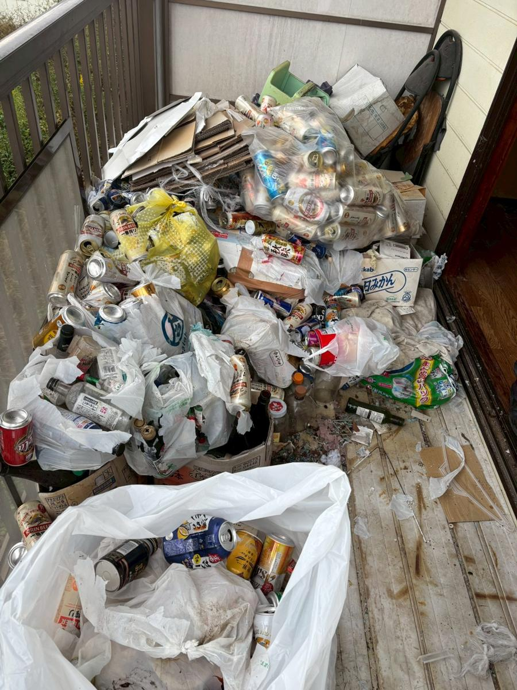
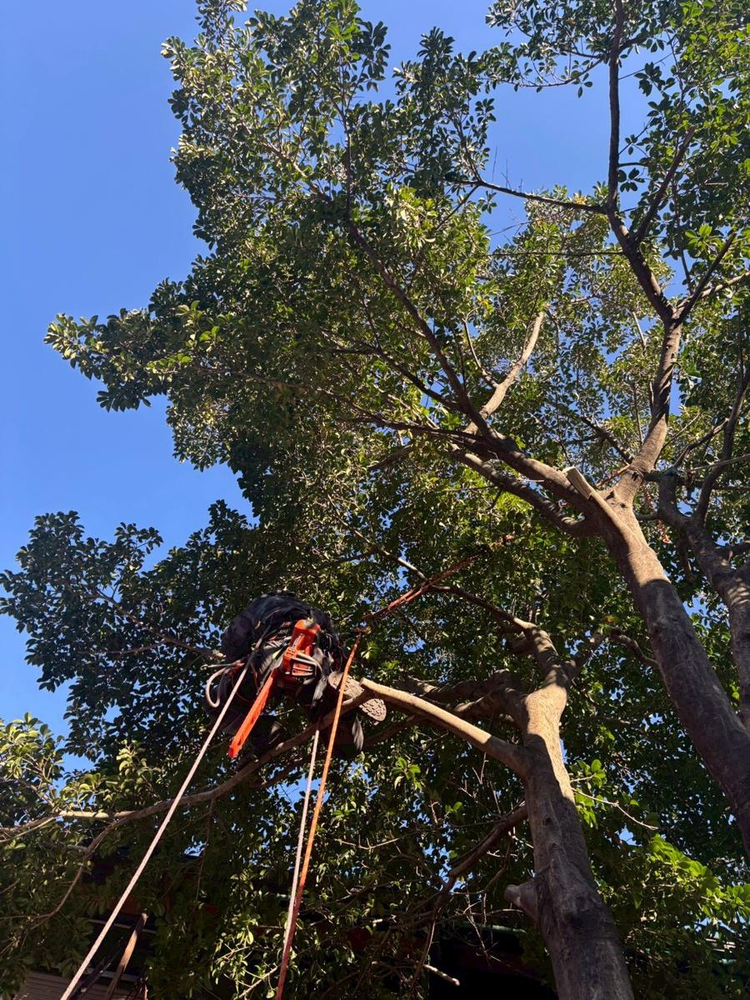
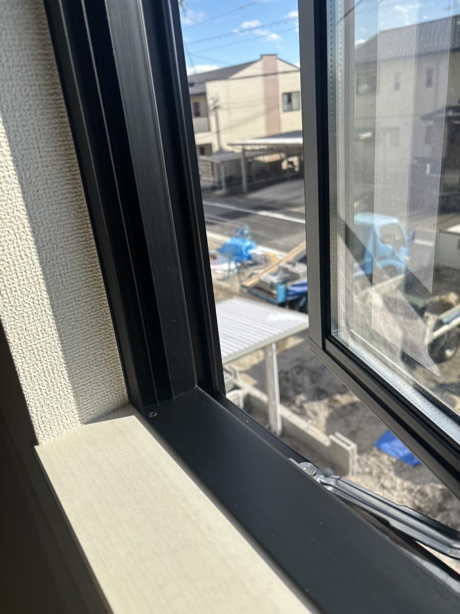
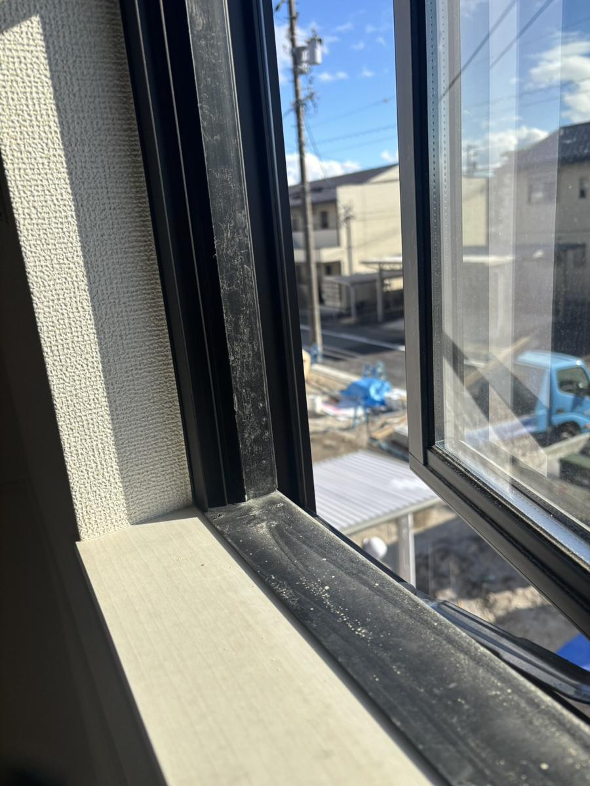
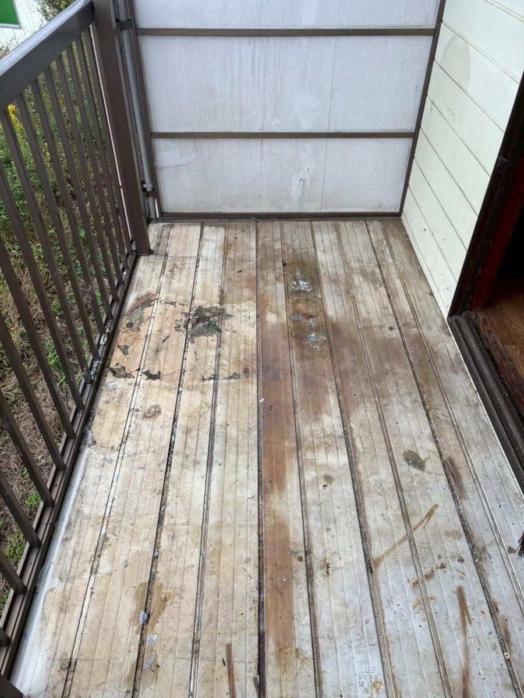
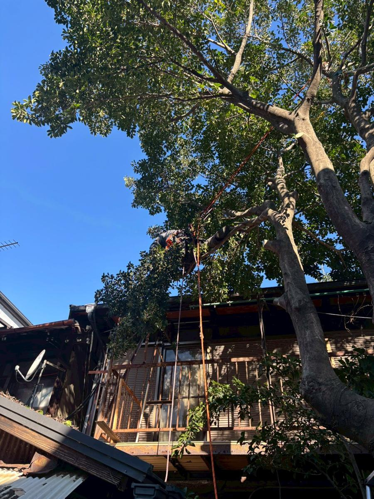

木造解体WOODEN STRUCTURE
木造住宅・倉庫・納屋など。瓦や木くず、ガラを分別しながら解体します。
Concept
建て替え、売却、駐車場、新しい店。建物を解体したあとの土地には、それぞれの「つぎ」があります。
TENDOUは、建物を安全に壊し、廃材を種類ごとに分けて運び出し、土地を平らに整えてお返しするまでを自社で行います。施主さまにも近隣の方にも、気持ちよく次へ進んでいただくための解体を心がけています。
ご契約まで費用はかかりません
多治見市・土岐市・瑞浪市・可児市を中心に対応
日曜定休。緊急時はお電話ください
Demolition
住宅一棟の解体から、店舗の内装解体、ブロック塀一枚の撤去まで。建物の構造と規模、立地に合わせて、手壊しと重機を使い分けます。
木造住宅・倉庫・納屋など。瓦や木くず、ガラを分別しながら解体します。
鉄骨造の店舗・倉庫・車庫など。鉄骨の切断から搬出まで対応します。
鉄筋コンクリート造の建物や基礎、擁壁などの解体・撤去を行います。
テナント退去時の原状回復や、リフォーム前のスケルトン解体に。
相続した空き家や古家に。家財が残ったままでも、片付けから一括でお受けします。
ブロック塀、カーポート、土間コンクリート、庭木・庭石の撤去。
Why TENDOU
解体の前後には、片付け、伐採、清掃といった作業がついてきます。TENDOUはそれらをまとめて自社で引き受けます。
現地調査、お見積り、解体、分別・搬出、整地まで、同じ会社が担当します。連絡先がひとつなので、確認や伝達の行き違いが起きません。
便利屋として始まったTENDOUは、残置物の撤去、樹木の伐採、清掃まで自社で対応できます。解体前の片付けを別の業者に頼む必要はありません。
着工前のご挨拶、養生シートによる飛散対策、作業時間への配慮。周りの暮らしを守りながら工事を進めます。
Process
お電話・LINE・フォームからご連絡ください。所在地と構造、おおよその広さが分かれば概算をお伝えできます。
建物の構造、敷地と搬出経路、残置物の量を確認し、内訳の分かるお見積りをお出しします。
工事日程を決め、着工前に近隣の皆さまへご挨拶に伺います。
養生シートで囲ってから解体し、廃材を種類ごとに分別して搬出します。
基礎や地中の障害物を撤去して整地し、仕上がりをご確認いただいてお引渡しです。
With demolition
解体前の片付けや、敷地の樹木、退去後の部屋の補修と清掃まで。単独のご依頼もお受けしています。

解体前の家財撤去、遺品整理、ごみ屋敷の片付けまで。

敷地の樹木伐採、重機の入らない高木の特殊伐採、草刈り。

賃貸物件のクロス・床・建具の補修や小修理。

退去後の空室清掃、工事後の仕上げ清掃、エアコン・水回り。
For property managers
退去後の残置物撤去、原状回復工事、クリーニングを1室からまとめてお受けしています。老朽化した物件の解体まで、同じ窓口でご相談いただけます。
Works
写真の上で左右にドラッグすると、施工前と施工後を見比べられます。

DRAG BEFOREAFTER
Message
壊して終わり、ではなく、つぎの始まりまで責任を持つ。
TENDOUは、暮らしの困りごとを引き受ける便利屋として始まりました。草刈り、片付け、清掃、修繕と現場を重ねるうちに、いちばん多くご相談いただくようになったのが建物の解体です。
解体の現場には、家財の片付けも、樹木の伐採も、工事後の清掃もついてきます。便利屋として身につけた幅広い対応力があるから、工程ごとに業者を分けず、ひとつの窓口で最後までお引き受けできます。
小さなご縁を、大きな信頼に。土地の「つぎ」をつくる会社として、一件一件に丁寧に向き合ってまいります。
Company
Recruit
解体を中心に、伐採・清掃・内装まで幅広い現場を経験できます。未経験の方も、先輩と一緒に現場で覚えていけます。
応募・お問い合わせFAQ
無料です。お見積りの内容にご納得いただいてから正式にご契約となります。
はい。残置物の撤去から解体までまとめてお引き受けできます。現地調査の際に残っている物の量も確認します。
建物と基礎、地中の障害物を撤去したうえで整地してお引渡しします。仕上げの状態はご希望に合わせてご相談ください。
岐阜県多治見市を拠点に、土岐市・瑞浪市・可児市を中心とした東濃エリア、岐阜県全域、愛知県、長野県まで対応しています。エリア外の方も一度ご相談ください。
はい。退去後の残置物撤去・原状回復工事・クリーニングを1室単位から継続的にお受けしています。
日曜日は定休日ですが、緊急のトラブルには対応いたします。お急ぎの場合はお電話（090-6164-3039）でご連絡ください。
Contact
現地調査・お見積りは無料です。お急ぎの場合はお電話が確実です。